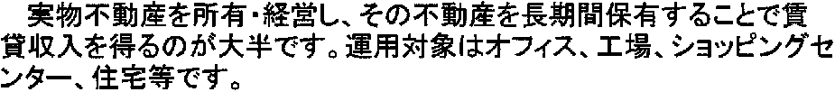

Tweet
Tweet
Korean uses Western punctuation, Chinese and Japanese use a different set of punctuation marks.
When writing Chinese, every character is given exactly the same amount of space, no matter how many strokes it contains. There are no spaces between characters and the characters which make up multi-syllable words are not grouped together. When reading Chinese, you not only have to work out what the characters mean and how to pronounce them, but also which characters belong together!
Some punctuation marks are similar to the Western equivalents, but were made bigger to suit the surrounding characters. The Chinese comma is larger than a Western comma, the Chinese and Japanese period are not a dot but a small circle.

When the text is written vertically, special quotation marks are always used, but when the Asian text is written horizontally, the Western quotation marks can be used as well.
So you can read Japanese, Simplified and Traditional Chinese, Korean, Hebrew, Arabic and Farsi given the proper OCR software. But how does it work? As you’ve never handled Asian or Hebrew documents on your computer, you’d like to know what it takes to really do it. (Let’s say you stumbled across a Japanese web site once, and all characters came up “garbled”!)
When you select Hebrew, Arabic or an Asian language, a mixed character set is actually used. Your OCR software copes beautifully with “Western” words (proper names etc.) as occur in Asian, Hebrew and Arabic documents.
The OCR software should adopt the Eastern and Hebrew-Arabic “text flow”: when the text runs from right to left and from top to bottom, the page analysis sorts the various zone blocks accordingly. And when you open the recognized text, its orientation will be right-to left and vertical, as in the source text.
The good news is that it’s not at all that hard to set up your machine to cope with the Asian, Hebrew or Arabic characters. Contrary to popular belief, it does not necessarily take an Asian, Hebrew or Arabic version of the Windows or macOS operating system to make good use of such recognized texts.
You can also use any sufficiently recent version of Word to view and edit such documents: Microsoft Office (for Windows and macOS) is specifically designed to cope with documents in many different languages!
The same logic applies to PDF documents: to view and edit Asian, Hebrew and Arabic PDF documents, use a recent enough version of the Adobe Reader (or Adobe Acrobat) software. Once you do, any version of Adobe Reader suffices to display PDF files properly! When the need arises to view and edit documents in “exotic” languages — Japanese or Chinese, Russian, Arabic, Hebrew etc. —, the Adobe Acrobat or Adobe Reader software updates automatically. (The Reader software can be downloaded for free from the Adobe web site.) On the Windows 8 and macOS platform, you can also use the app Reader (Windows) and the application Preview (macOS) to study PDF documents. And more and more web browsers open PDF documents seamlessly…
Which languages can OCR software read? — The history of the alphabets – Latin alphabet — Latin punctuation — Greek alphabet — Cyrillic (Russian) alphabet — Hebrew alphabet — Arabic alphabet — Let’s go East – Chinese alphabet — Japanese alphabet — Asian punctuation
Home page — Intro — Scanners — Images — History — OCR — Languages — Accuracy — Output — BCR — Pen scanners — Sitemap — Search — Contact – Feedback